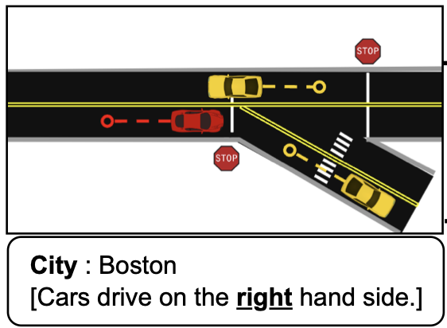

Publications
For a full list, please visit Google Scholar.
-
AmeliaTF: A Large Model and Dataset for Airport Surface Movement Forecasting
AIAA AVIATION FORUM AND ASCEND 2024 [Best Paper Award]
-
RuleFuser: An Evidential Bayes Approach for Rule Injection in Imitation Learned Planners for Robustness under Distribution Shifts
Preprint (ArXiv) 2024
-
Pegasus simulator: An isaac sim framework for multiple aerial vehicles simulation
International Conference on Unmanned Aircraft Systems (ICUAS) 2024
-
TartanAviation: Image, Speech, and ADS-B Trajectory Datasets for Terminal Airspace Operations
Preprint (ArXiv) 2024
-
SoRTS: Learned Tree Search for Long Horizon Social Robot Navigation
IEEE Robotics and Automation Letters 2024
-
 Toward General-Purpose Robots via Foundation Models: A Survey and Meta-Analysis
Toward General-Purpose Robots via Foundation Models: A Survey and Meta-AnalysisPreprint (ArXiv) 2023
-
 FoundLoc: Vision-based Onboard Aerial Localization in the Wild
FoundLoc: Vision-based Onboard Aerial Localization in the WildPreprint (ArXiv) 2023
-
Follow the rules: Online signal temporal logic tree search for guided imitation learning in stochastic domains
IEEE International Conference on Robotics and Automation (ICRA) 2023
-
AirTrack: Onboard deep learning framework for long-range aircraft detection and tracking
2023 IEEE International Conference on Robotics and Automation (ICRA) 2023
-
Challenges in Close-Proximity Safe and Seamless Operation of Manned and Unmanned Aircraft in Shared Airspace
International Conference on Robotics and Automation (ICRA) [Workshop] 2022
-
 Quantifying the Effect of Weather on Advanced Air Mobility Operations
Quantifying the Effect of Weather on Advanced Air Mobility OperationsFindings 2022
-
 Drone flight data reveal energy and greenhouse gas emissions savings for very small package delivery
Drone flight data reveal energy and greenhouse gas emissions savings for very small package deliveryPatterns 2022
-
Predicting like a pilot: Dataset and method to predict socially-aware aircraft trajectories in non-towered terminal airspace
International Conference on Robotics and Automation (ICRA) 2022
-
Adaptive Safety Margin Estimation for Safe Real-Time Replanning under Time-Varying Disturbance
2021
-
In-flight positional and energy use data set of a DJI Matrice 100 quadcopter for small package delivery
Scientific Data 2021
-
Cvar-based flight energy risk assessment for multirotor uavs using a deep energy model
IEEE International Conference on Robotics and Automation (ICRA) 2021
-
Wind and the city: Utilizing uav-based in-situ measurements for estimating urban wind fields
IEEE/RSJ International Conference on Intelligent Robots and Systems (IROS) 2020
-
Real-time motion planning of curvature continuous trajectories for urban UAV operations in wind
2020 International Conference on Unmanned Aircraft Systems (ICUAS) 2020
-
Sequential Auto-Landing of Multiple UAVs using Control Constrained Path Following
AIAA Scitech Forum 2019
-
 Nested saturation based guidance law for unmanned aerial vehicles
Nested saturation based guidance law for unmanned aerial vehiclesJournal of Dynamic Systems, Measurement, and Control 2019
-
MARAAL: A low altitude long endurance solar powered UAV for surveillance and mapping applications
2018 23rd International Conference on Methods & Models in Automation & Robotics (MMAR) 2018
-
 Convolutional neural network based sensors for mobile robot relocalization
Convolutional neural network based sensors for mobile robot relocalization2018 23rd International Conference on Methods & Models in Automation & Robotics (MMAR) 2018
-
A Novel Fully Quaternion based Nonlinear Attitude and Position Controller
2018 AIAA Guidance, Navigation, and Control Conference 2018
-
A low-cost tilt-augmented quadrotor helicopter: Modeling and control
2018 international conference on unmanned aircraft systems (ICUAS) 2018
2024
2023
2022
2021
2020
2019
2018
Theses
-
 Wind-Field Estimation and Curvature Continuous Path Planning for Low Altitude Urban Aerial Mobility
Wind-Field Estimation and Curvature Continuous Path Planning for Low Altitude Urban Aerial MobilityCarnegie Mellon University, 2020
-
 A 3D Guidance Law for Path Following
A 3D Guidance Law for Path FollowingIndian Institute of Technology Kanpur, 2018